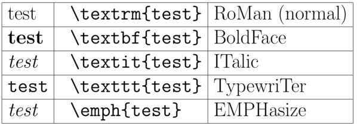
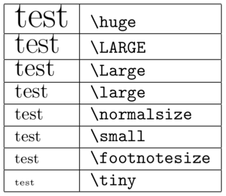

Introduction
Latex is a tool used to prepare documents. It is very useful to write scientific documents but can also be used to write a wide variety of other documents. Latex is not a word processor instead you concentrate on writing the content and Latex will format it for you. Latex is not a What You See is What You Get (WYSWG) editor like Microsoft Word. Almost everything in Latex can be customized, however it is recommended to stick with the default values as much as possible.
At the end of this tutorial you should be able to create a basic Latex documents. We will also show you resources so that with a little work you will be able to create almost any type document.
Tools
To get started you will need at least the following:
- Text editor e.g.:Gedit, GVim, Sublime or an IDE e.g.:TexMaker,TeXnicCenter ...
- TeX distribution e.g.:TeXLive, MiKTeX ...
- PDF viewer e.g.: Evince, Okular ...
On Linux these tools can be installed by issuing the following commands in a terminal:
sudo apt-get install gedit
sudo apt-get install texlive
sudo apt-get install evince
A standard work-flow while writing Latex documents is to write the document in any text editor, next compile it with the pdflatex filename command in a terminal. The output is then automatically saved as filename.pdf, which can be opened with any pdf viewer. Some pdf readers will automatically update after compiling, others will require an open and close of the file. Latex IDE's usually include all three steps in one program.
Document structure
In Latex the text that you would enter in your body is entered as you normally would. Commands start with a backslash which is then followed by the command name. One then places the options, if any, in square brackets and the argument follows in curly brackets. A generic command would look like:
\command[option]{argument}
Basic structure
Every Latex document must begin with the \documentclass command. The options of this command define the basic properties of your document such as paper size and font. The argument of the command is a template which dictates the layout of your document. Of the templates available the ones that are used most commonly for scientific writing are: article and book. This is then followed by the environment that contains the body of your text. An environment is always defined by :
\begin{environment_name}[options]
commands
\end{environment_name}.
Any basic Latex document will start with the following structure:
\documentclass[a4paper,12pt]{article}
\begin{document}
\end{document}
Creating sections
To give the document some more structure the main body can be divided into sections, subsections, subsubsections... The heading of the section is enclosed as argument for each section command. Latex will automatically take care of the numbering. Suffixing a * to a Latex section command will result in an unnumbered section, this also works for other numbered commands, some examples will follow.
\begin{document}
\section{Heading 1}
This is a section.
\subsection{Sub Heading 1}
And here we have reached a subsection under a section.
\subsection*{Sub Heading 2}
This is an unnumbered section.\\
This is a new paragraph.
\section{Heading 2}
Another section
\end{document}
A new line is started with a double-backslash and a new paragraph is started by a entering an empty line after a new line.
Labelling
Latex makes it very easy to reference and cross-reference parts of your document. This is done by using labels. In this example a label is attached to a section heading using the \label command. It can be refereed to later on using the \ref command.
\section{Heading 1}\label{sec:head1}
This is a section.
\subsection{Sub Heading 1}
And here we have reached a subsection under section \ref{sec:head1}.
A common but not mandatory way of naming labels is:
- chap: for chapters
- sec: for sections
- fig: for figures
- eq: or eqn: for equations
- tab: for tables
Adding basic packages
A lot of extra functionality can be added to Latex by using packages. Some packages are required for even the most basic documents. Packages can be added using the \usepackage[]{} command, these commands must all be placed in the preamble, this means before the \begin{document}.
\documentclass[a4paper,12pt]{article}
\usepackage{amsmath,amsfonts,graphicx}
\usepackage{float}
\begin{document}
\end{document}
Custom formatting
Text can be easily formatted in Latex.
\subsection*{Sub Heading 2}
This is an unnumbered section. This sentence shows the different formatting options:
\textbf{bold}, \textit{italic}, \emph{emphasize}. You can also make text \huge{huge}
or \small{small} or any combination like \textbf{\huge{bold and large}}.


Environments
Maths
Including maths in a Latex document is very convenient especially compared to some other word processing tools. There are two different ways in which mathematical expressions can be included. One is in-line with the text by enclosing your expression with $ signs.
There are two ways of included mathematical expression, in-line .
Maths expressions enclosed in \$ is used to create in-line maths. E.g. $c^2=a^2+b^2$.\\
For longer expressions and labelling the equation environment is used.
\begin{equation}
\frac{d f}{dx}=\lim_{\Delta x \rightarrow 0}\frac{f(x+\Delta x)-f(x)}{\Delta x},
\label{eqn:eq1}
\end{equation}
Multi line equations can be formatted with the align environment:
\begin{align}
\frac{d}{dx}(x+y)^{2}&=\frac{d}{dx}\left[ x^{2}+y^{2}+2xy\right], \nonumber\\
&=2x+2y. \label{eqn:eq2}
\end{align}
As mentioned before these environments can be easily referenced from the text.
as in other environments we can use the \textit{label} command to refer to equations.
As you can see in equations \ref{eqn:eq1} and \eqref{eqn:eq2} typing maths in \LaTeX{} is fun and easy.
A comprehensive list of Latex's maths capabilities can be found here.
Figures
In Latex it also easy to include figures. Figures are treated as objects that are separate from the text. They are referred to as floats and their position is not fixed. An example figure is shown below:
\begin{figure}[htb]
\centering
\includegraphics[width=0.75\textwidth]{phd-front.jpg} %You can also comment your Latex file
\caption{This is a very funny picture.}
\label{fig:funnypic}
\end{figure}
Lists
Latex also allows various ways to list text. They can either be numbered lists or unnumbered lists. An example of these are:
\begin{enumerate}
\item We have so far learnt how to structure a document.
\item How to format text.
\item How to use various math environments.
\item How to display graphics.
\end{enumerate}
or in unnumbered fashion:
\begin{itemize}
\item We have so far learnt how to structure a document.
\item How to format text.
\item How to use various math environments.
\item How to display graphics.
\end{itemize}
Tables
Latex allows you you to include your hard earned data in tables such as:
\begin{table}[htb]
\caption{A table with useless info.}
\label{tab:tab1}
\centering
\begin{tabular}{c|l|l}
S.No. & Price [\$] & Stock \\
\hline
\hline
1 & 200 & 5 \\
2 & 65 & 7 \\
3 & 198 & 8 \\
\end{tabular}
\end{table}
Some useful commands
- Table of contents:
\tableofcontents
- Today's date:
\today
- Continue on next page:
\newpage
- Comments:
%
The next step
Citing and bibliography
A basic way of adding a limited number of references is the bibliography environment. This environment takes care of the tedious reference formatting and allows for easy citation via the \cite{} command. A better way to do this would be to create and include a bibtex file. More details can be found here.
%This is a bibliography placed within the document. It is more common to create a separate file.
\begin{thebibliography}{99}
\bibitem{lamp} Leslie Lamport, \LaTeX\ Guide and Reference Manual,
Addison Wesley (1994).
\bibitem{oet} Tobias Oetiker, Hubert Partl, Irene Hyna and Elisabeth Schlegl,
The (Not So) Short Introduction to \LaTeX 2e, www.latex-project.org (2011).
\end{thebibliography}
References and useful links
Exercise
Try and recreate the following documents as best as you can:
- Exercise 1: pdf,
- Exercise 2: pdf, use an external Bibtex file for the citations this time.
Solutions to the exercises: